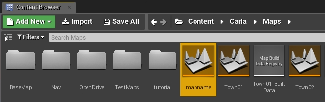
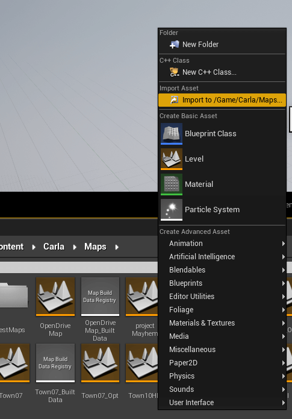
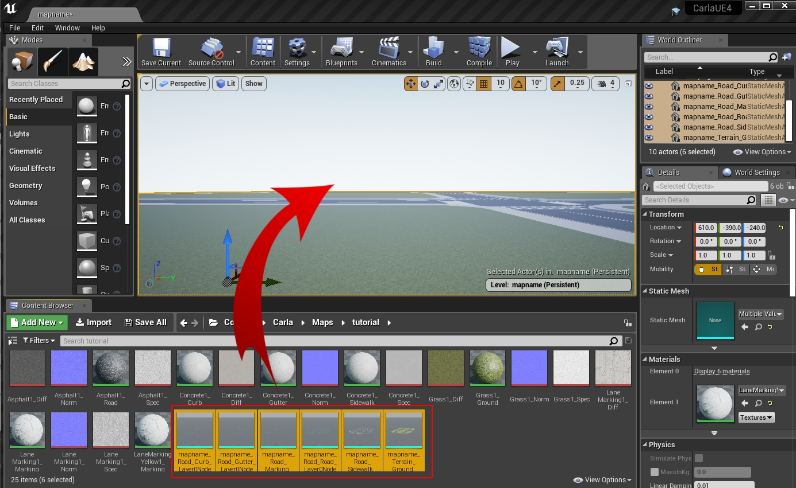
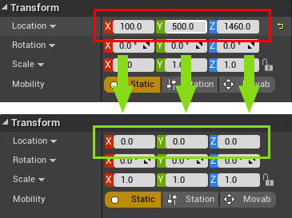
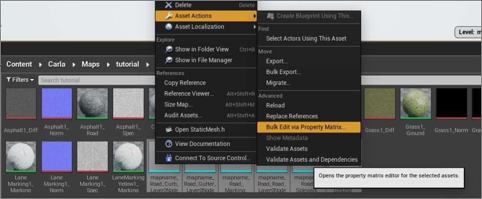
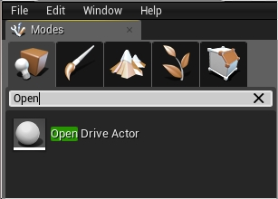
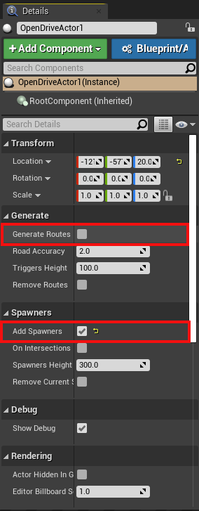

导入地图的替代方法¶
本指南介绍了将地图导入 Carla 的替代方法。这些方法涉及比包 和 源代码 导入指南中描述的过程更多的手动步骤。首先我们将介绍 RoadRuner 插件，然后介绍手动导入方法。
RoadRunner 插件导入 ¶
MathWorks 的 RoadRunner 软件提供了虚幻引擎插件，以帮助简化将地图导入 Carla 的过程。
插件安装 ¶
1. 插件可从 MathWorks 网站 下载。MathWorks 还有一个 完整的教程 ，与此类似，介绍如何使用插件将地图导入 Carla。
2. 解压下载文件夹的内容并将 RoadRunnerImporter 和 RoadRunnerMaterials 文件夹移动到 <carla>/Unreal/CarlaUE4/Plugins/。
3. 按照以下说明重建插件：
- 在 Windows 上。
- 右键单击
<carla>/Unreal/CarlaUE4中的.uproject文件，并选择Generate Visual Studio project files。 - 在 Carla 的根文件夹中，运行命令：
- 右键单击
make launch
- 在 Linux 上。
- 运行以下命令：
UE4_ROOT/GenerateProjectFiles.sh -project="carla/Unreal/CarlaUE4/CarlaUE4.uproject" -game -engine
- 运行以下命令：
4. 在虚幻引擎窗口中，确保选中两个插件的复选框 Edit > Plugins 选中。

导入地图 ¶
1. 使用 Import 按钮将 <mapName>.fbx 文件导入到 /Content/Carla/Maps 下面的新文件夹中。

2. 将 Scene > Hierarchy Type 设置为 Create One Blueprint Asset （默认选择）。
3. 将 Static Meshes > Normal Import Method 设置为 Import Normals 。

4. 点击 Import。
5. 保存当前关卡 File -> Save Current As... -> <mapname> 。
新地图现在应该出现在虚幻引擎 内容浏览器 中其他地图的旁边。

!!! 笔记
语义分割的标签将根据资产名称分配。该资源将被移动到 Content/Carla/PackageName/Static 中的相应文件夹中。要更改这些，请在导入后手动移动它们。
手动导入 ¶
这种导入地图的方法可以与通用 .fbx 和 .xodr 文件一起使用。如果您使用 RoadRunner，则应使用 Firebox (.fbx)、OpenDRIVE (.xodr) 或 Unreal (.fbx + .xml) 导出方法。不要使用该Carla Exporter选项，因为您将遇到.fbx文件的兼容性问题。
要将地图手动导入虚幻引擎：
1. 在系统的文件资源管理器中，将.xodr文件复制到 <carla-root>/Unreal/CarlaUE4/Content/Carla/Maps/OpenDrive。
2. 通过在 carla 根目录中运行 make launch 来打开虚幻引擎编辑器。在编辑器的 内容浏览器 中，导航到 Content/Carla/Maps/BaseMap 并复制 BaseMap 。这将提供带有默认天空和照明对象的空白地图。

3. 在目录 Content/Carla/Maps 中创建一个以您的地图包名称命名的新文件夹，并以与您的 .fbx 和 .xodr 文件相同的名称保存复制的地图。
4. 在虚幻引擎编辑器的 内容浏览器 中，导航回Content/Carla/Maps。右键单击灰色区域并在标题 Import Asset 下选择Import to /Game/Carla/Maps...。

5. 在弹出的配置窗口中，确保：
- 这些选项未选中：
- 自动生成碰撞(Auto Generate Collision)
- 组合网格(Combine Meshes)
- Force Front xAxis
- 在以下下拉列表中，选择相应的选项：
- 法线导入方法 - Import Normals
- 材质导入方法 - Create New Materials
- 检查这些选项：
- Convert Scene Unit
- Import Textures

6. 单击 Import。
7. 网格将出现在 内容浏览器 中。选择网格并将它们拖到场景中。

8. 将网格置于 0,0,0 中心。

9. 在 内容浏览器 中，选择所有需要有碰撞体的网格体。这是指与行人或车辆交互的任何网格。碰撞体防止他们掉入深渊。右键单击选定的网格并选择Asset Actions > Bulk Edit via Property Matrix...。

10. 在搜索框中搜索 碰撞(collision)。
11. 将 Collision Complexity 从 Project Default 改为 Use Complex Collision As Simple 并关闭窗口。

12. 按 Alt + c 确认碰撞设置已正确应用。您会在网格上看到黑色的网。
13. 要为语义分割传感器创建真实数据，请将静态网格物体移动到Carla/Static/<segment>遵循以下结构的相应文件夹：
Content
└── Carla
├── Blueprints
├── Config
├── Exported Maps
├── HDMaps
├── Maps
└── Static
├── Terrain
│ └── mapname
│ └── Static Meshes
│
├── Road
│ └── mapname
│ └── Static Meshes
│
├── RoadLines
| └── mapname
| └── Static Meshes
└── Sidewalks
└── mapname
└── Static Meshes
14. 在 “模式(Modes)” 面板中，搜索 Open Drive Actor 并将其拖到场景中。

15. 在“详细信息(Details)”面板中，选中Add Spawners并单击 Generate Routes 旁边的框。这将在 <carla-root>/Unreal/CarlaUE4/Content/Carla/Maps/OpenDrive 目录中找到具有相同地图名称的 .xodr 文件，并使用它来生成一系列 RoutePlanner 和 VehicleSpawnPoint 参与者。

下一步 ¶
您现在可以在虚幻编辑器中打开地图并运行模拟。从这里，您将能够自定义地图并生成行人导航数据。我们建议在所有自定义完成后生成行人导航，这样就不会有障碍物阻挡行人路径。
Carla 提供了多种工具和指南来帮助自定义地图：
完成定制后，您可以 生成行人导航信息 。
建议使用 Carla 包 和 Carla 源代码构建 指南中详细介绍的自动化流程来导入地图，但是如果需要，可以使用本节中列出的方法。如果您在使用其他方法时遇到任何问题，请随时在论坛中发帖。